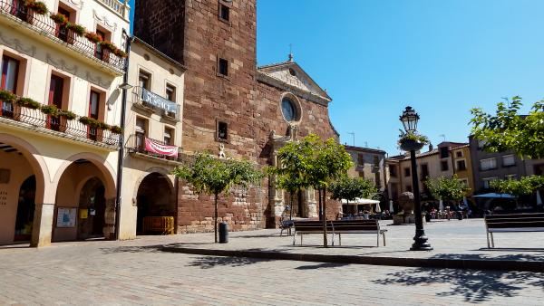

Los pueblos mas bonitos de cataluña
Los pueblos mas bonitos de cataluña

Prades es un pequeño pueblo tarraconense que pertenece a la comarca del Baix Camp. Sus habitantes lo llaman la Villa Roja debido a la piedra de color rojizo que forma parte de muchos de sus edificios.
Su conjunto histórico, recinto amurallado de orígenes medievales, está catalogado como Bien de Interés Cultural. Al conjunto histórico de Prades lo complementan el resto de rincones con encanto que se pueden descubrir al recorrer sus calles empedradas y llenas de flores.
¿Qué visitar en Prades y alrededores?